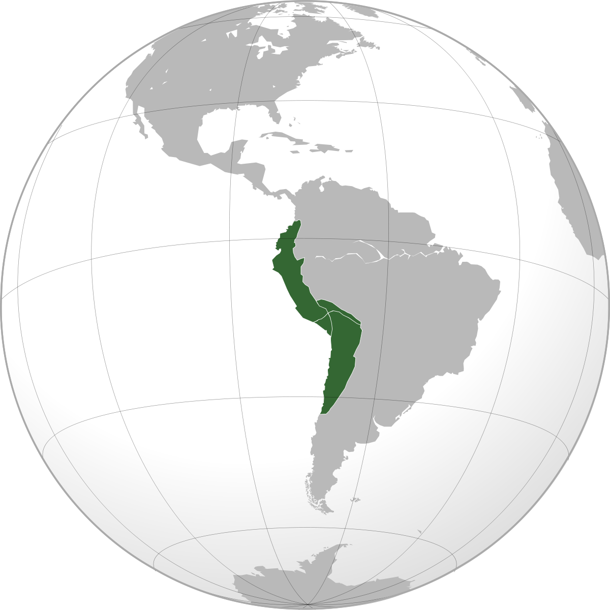
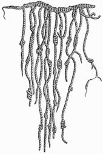

Inkar

Inkaríkið var stofnað um 1200 af Manco Capac og var til að byrja með smáríki í kringum höfuðborgina Cuzco en stækkaði norður og suður eftir Andesfjöllunum. Inkar tóku við stjórn í Andesfjöllunum í Suður Ameríku af Chimúmönnum.
Á 15. öld stækkaði Ríki Inka mikið þegar það var sem stærst náði það yfir meginhluta Perú, Chile, Bólivíu og Ekvador. Er talið að yfir 10 milljónir íbúa hafi búið þar þegar það var sem stærst.
Þetta var blómaskeið Inka og var mest þegar Pachacutis keisari réð ríkjum. Pachacutis fór í ýmsar umbætur á ríkinu hvað varðar stjórnarfar. Til dæmis tilnefndi hann embættismenn sem stjórna áttu landinu og kom á miðstýrðu eftirliti með bústörfum, rekstri og byggingum.
Stjórnkerfi Inkaríkis
Æðsti aðilinn í Inkaríkinu var keisarinn og var hann dýrkaður sem guð og var talið að hann hafi fengið vald sitt frá Inti æðsta guði Inka. Það var stéttaskipting í inkaríkinu. Á eftir keisaranum komu æðstiprestur og yfirherforinginn, síðan komu fjórðungskóngarnir, venjulegu herforingjarnir, síðan musterisprestarnir arkitektarnir/verkfræðingarnir, embættismenn og herstjórnendur, þá komu listamenn, tónlistarmenn, höfuðsmenn í hernum, ritarar og þar á eftir endurskoðendur Inkanna. Á botninum voru svo læknarnir, bændurnir og óbreyttir hermenn.Trúarbrögð
Trúarbrögð voru mikilvæg í Inkaríki, það voru margir guðir en æðsti guðinn var sólguðinn Inti og var hann talinn forfaðir Inka. Þeir trúðu á náttúruna og byggðist trú þeirra á að bera virðingu fyrir umhverfinu. Margir staðir í náttúrunni voru taldir heilagir og fóru margar mikilvægar trúarathafnir fram það. Þessi staðir voru kallaðir huaca. Daglegt líf
Inkar bjuggu yfirleitt í smáþorpum fyrir utan borgirnar. Stórfjölskyldan bjó saman og vann saman í landbúnaði þar sem þau ræktuðu meðal annars maí, kartöflur og ýmsar baunir og krydd. Öll vinna var unnin með höndunum og voru afar fá verkfæri.Inkar byggðu hús sín úr sólþurrkuðum múrsteinum og grjóti en notuðu ekki húsgögn. Þeir komu upp góðu vegakerfi í ríkinu sem varð til þess að öll verslun varð auðveldari, að flytja vörur. Inkar notuðu ekki peninga heldur notuðu vöruskipti í verslun.
Þetta góða vegakerfi Inka í Andesfjöllunum var einnig notað til að koma skilaboðum á milli svæða. Ungir menn voru þjálfaðir upp í verða svokallaðir hraðaboðar en það voru sendiboðar sem hlupu boðhlaup milli staða. Skilaboð gátu þannig borist allt að 250 km. á dag. Annaðhvort voru þetta munnleg skilaboð eða skilaboð sem skrifuð voru í hnúta. Inkar höfðu ekki eiginlegt ritmál þannig að þeir geymdum upplýsingar á spottum með hnútum á. Þeir voru misstórir, mislitir og mislangt á milli þeirra, allt eftir því hvað þeir áttu að tákna. Þetta hnútakerfi Inkana var kallað Quipu.

Machu Picchu
Árið 1450 ákvað Pachacutis að byggja nýjan borg 80 km. frá höfuðborginni á mjög illfærum stað langt upp í fjöllunum. Borgin er kölluð Machu Picchu og var mjög afskekkt og vel varin af ám, fjöllum og gljúfrum. Borgin samanstendur af 140 byggingum, íbúðarhúsum, opinberum byggingum og hofum. Þegar inkaveldið lagðist af var borgin yfirgefin og fannst ekki aftur fyrr en fjórum öldum seinna þegar bandarískur sagnfræðingur að nafni Hiram Bingham uppgvötaði hana í rannsóknarleiðangri sínum. Machu Picchu var valið eitt af nýju 7 undrum veraldar árið 2007 og er á heimsminjaskrá UNESCO. Borgin gefa einstaka innsýn og varðveitir minjar inkaveldis.Endalok Inkaveldis
Árið 1527 deyr keisari Inka Huayna Capac og eftir dauða hans er ríkinu skipt á milli sona hans og það leiðir til 7 ára borgarastyrjaldar. Árið 1530 kemur leiðangur frá Spáni undir forystu Francisco Pizzaro til Suður-Ameríku að leita að gulli. Spánverjar voru mjög hrifnir af veldi Inka, af öllum höllunum, vegakerfinu, áveitkerfi og fleira. Þetta var ekki mikill fjöldi Spánverja sem kom og þeir voru því fáliðari en Inkarnir en Spánverjarnir höfðu með sér hesta, brynjur og byssur sem Inkarnir höfðu ekki. Auk þess var borgarastyrjöld og Inkarnir því tvístraðir.Árið 1532 tók Pizzarro Atahualpa keisara Inka til fanga og krafðist lausnargjalds. Inkarnir borguðu lausnargjaldið sem var fullt herbergi af gulli og tvo herbergi af silfri en Spánverjarnir drápu samt Atahualpa keisara og þar með náðu Spánverjarar Inka ríkinu undir sig. Inkarnir héldu samt áfram að veit Spánverjum mótspyrnu úr fjallavirkjum eins og Machu Picchu til ársins 1572.